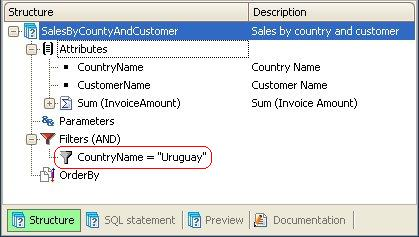
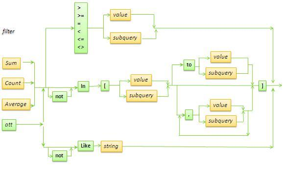
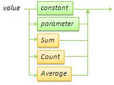
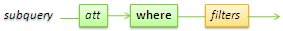
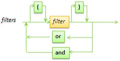
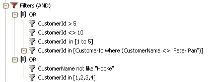
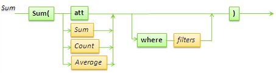
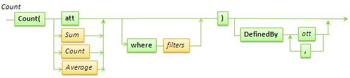
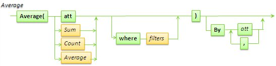

Diagrams are used here to show the filters that can be applied in a query through the Query object's Filters node, as illustrated by the example below:  In the following syntax diagrams:
Valid filter:The following diagram represents a valid entry for the Filters node. In other words: a valid filter.  According to the above, we have the following filter possibilities:
Valid values: Examples:
Constraints
Date and Datetime FiltersWhen using a Date or Datetime attribute, the filter format is #YYYY-MM-DD# for Date and #YYYY-MM-DD HH:MM:SS# for Datetime; otherwise the following error will occur: invalid date constant; ANSI format expected: YYYY-MM-DD HH:MM:SS. Valid subqueries:They're used to specify a filter that is not a constant or a list of constant values, but in which values are drawn from the database.  Example: Suppose we have a table that relates Supplier with Product sold. SupplierId* We need to have a query that shows all the suppliers that sell product 5, and the amount of product that each supplier sells. To do that, we have to specify the query as follows: Atts:
Filters:
Observations: The subquery has to return one or more values, as applicable. If either =, >, >=, <, <=, of <> are used, it must return a single value. E.g.: att=[subquery]. It should also return a single value when it is used with the in operator and a list of values that includes the subquery as one of those values. E.g.: att in [value1, value2, subquery, value3]. The list can be a list of clients 1, 2 and 3 plus the client that bought the most products (this client is obtained through a subquery). A single value is also returned when a range is established. The only case in which the subquery can return N values is when it is used with an in operator that has a single element: the subquery. It's the example that returns all the suppliers that sold product 5 and the amount of product sold by these suppliers. That is: att in [subquery]. Filters made up of logical operators: Also, to avoid having to specify a query: (filter1 or filter2, or... or filterN) and (anotherFilter1 or anotherFilter2 or ... or anotherFilterM), you can specify groups of filters, as shown here with the following two, whose elements are linked by OR and both results are joined by AND:  That is, a filter group is used to place attributes between brackets and connect them with AND and OR. Valid Sum: Note that nesting is possible using Sum, Count and Average. Remember that the Where conditions the elements that are to be added; that is, it is applied before aggregating. For example, if you have Sum( InvoiceAmount where (InvoiceAmount > 1000)), only the invoices with amount > 1000 will be added together. Valid Count: Note that nesting is possible using Sum, Count and Average. Remember that the Where conditions the elements that are to be counted; that is, it is applied before aggregating. Valid Average: Note that nesting is possible using Sum, Count and Average. Remember that the Where conditions the elements that are to be averaged; that is, it is applied before aggregating. Some differences of the Query object filters with filters specified in other GeneXus objects (procedures, web panels, data providers, etc.):
|
| Backlinks |
| Category:Query object |